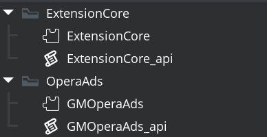

Setting Up
Import the OperaAds extension folder with all subfolders into your project. Make sure to include the ExtensionCore subdirectory and all of its contents.

Initializing the SDK
Before displaying ads, you must initialize the Opera Ads SDK. Configure your Application ID and Placement IDs in the extension options, then initialize early in your game (typically in the Create event of your first room or game controller object):
// Initialize Opera Ads SDK
opera_ads_init(function(success, error_message)
{
if (!success)
{
show_debug_message("Opera Ads init failed: " + string(error_message));
return;
}
show_debug_message("Opera Ads initialized successfully!");
});Displaying Your First Ad
Once the SDK is initialized, you can load and display ads. Here's a simple example of showing a banner ad:
// Load a banner ad (uses placement ID from extension options)
opera_ads_banner_load(function(event, error_message)
{
switch (event)
{
case OperaAdsCallbackEventBanner.Loaded:
show_debug_message("Banner loaded");
// Show banner at bottom center of screen
opera_ads_banner_show(OperaAdsBannerPosition.BottomCenter);
break;
case OperaAdsCallbackEventBanner.Impression:
show_debug_message("Banner impression recorded");
break;
case OperaAdsCallbackEventBanner.Clicked:
show_debug_message("Banner clicked");
break;
case OperaAdsCallbackEventBanner.LoadFailed:
show_debug_message("Banner load failed: " + string(error_message));
break;
}
});Using Custom Placement IDs
You can override the default placement IDs configured in the extension options:
// Set a custom banner placement ID before loading
opera_ads_banner_set_placement_id("your_custom_banner_id");
opera_ads_banner_load(function(event, error_message) { /* ... */ });Extension Configuration
Before using the extension, configure your Opera Ads credentials in the Extension Options:
- Open the GMOperaAds extension in your project
- Configure the following options:
- Android Application ID - Your app ID from the Opera Ads publisher portal
- Android Interstitial - Placement ID for interstitial ads
- Android Rewarded - Placement ID for rewarded video ads
- Android Rewarded Interstitial - Placement ID for rewarded interstitial ads
- Android App Open - Placement ID for app open ads
- Android Banner - Placement ID for banner ads
- (Repeat for iOS with corresponding iOS placement IDs)
Requirements
- Android: API 24+ (Android 7.0) minimum
- iOS: iOS 13+ minimum
- Opera Ads Account: Register at https://doc.adx.opera.com to obtain your Application ID and Placement IDs
- ExtensionCore: Must be imported alongside the OperaAds extension
GameMaker will automatically download the required SDK dependencies (via Gradle for Android and CocoaPods for iOS) during the build process.